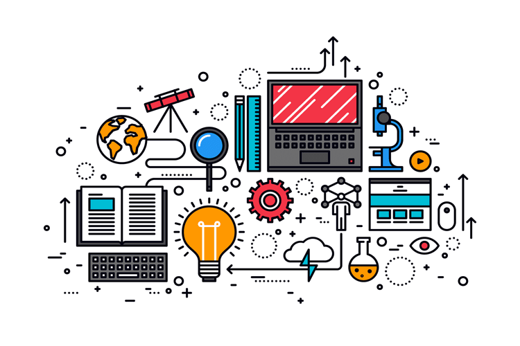
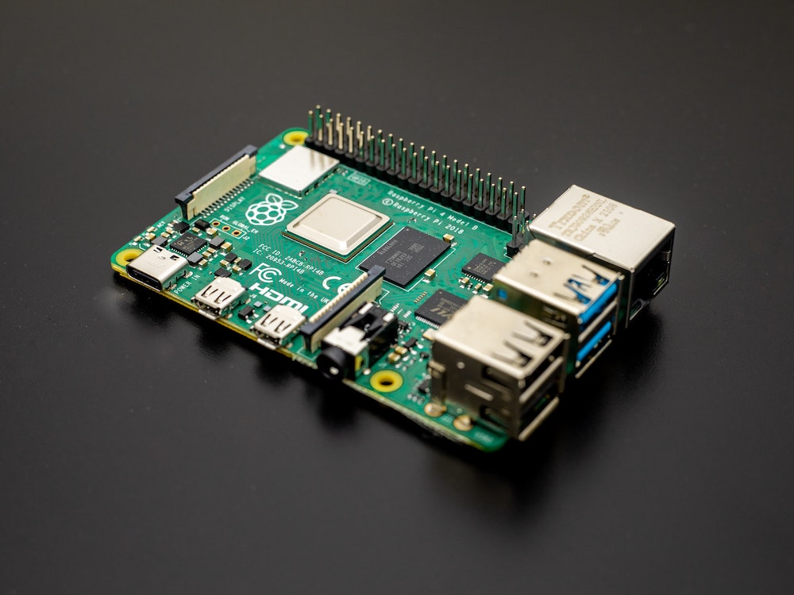
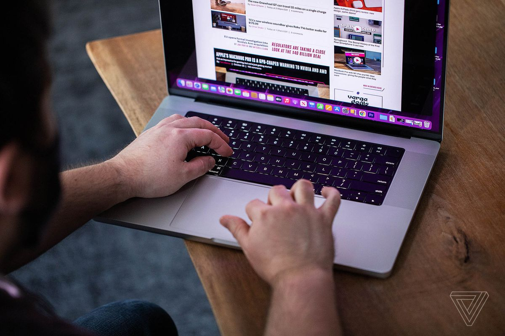

Gear for getting better at your side gig
Building & Prototyping: CanaKit Raspberry Pi 3 Complete Starter Kit
t’s a lot easier to create hardware prototypes when you have a legitimate starting base. The Raspberry Pi 3, a mini Linux computer, can operate as a starting point and brain of a variety of gadgets. We recommend the CanaKit Raspberry Pi 3 Complete Starter Kit to get going on building anything from a gaming console to a smart-home speaker. The included Raspberry Pi 3 Model B computer has software and general input/output pins for running added lights, sensors, or switches. The kit is also packed with everything you need to begin a project including cables, a power supply, a microSD card, and a case for convenience.

